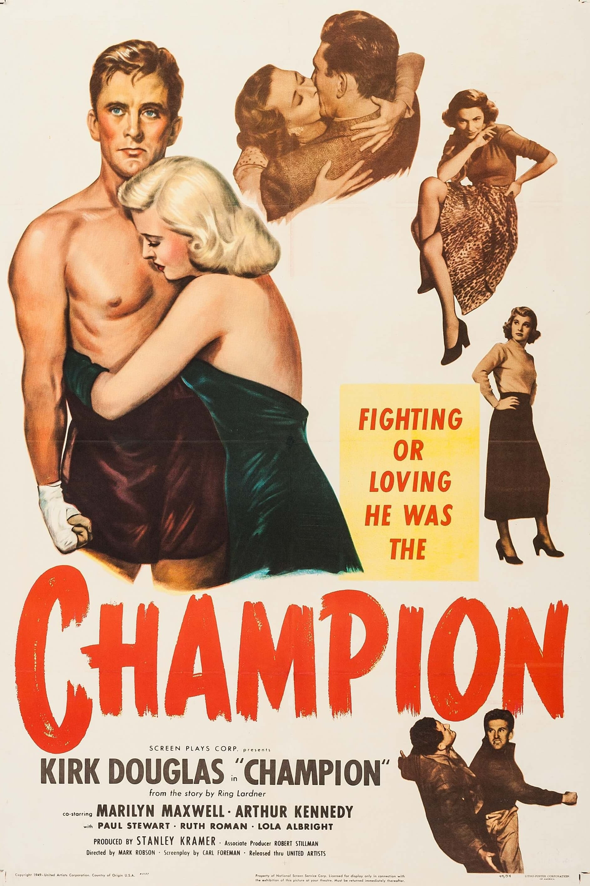

Champion
22nd Academy Awards
(Oscars 1950)
6 Nominations, 1 Award
| Nominations | ||
|---|---|---|
| Category | Nominees | Result |
| Actor | Kirk Douglas | Nominated |
| Actor in a Supporting Role | Arthur Kennedy | Nominated |
| Writing (Screenplay) | Carl Foreman | Nominated |
| Cinematography (Black-and-White) | Frank Planer | Nominated |
| Film Editing | Harry Gerstad | Won |
| Music (Music Score of a Dramatic or Comedy Picture) | Dimitri Tiomkin | Nominated |